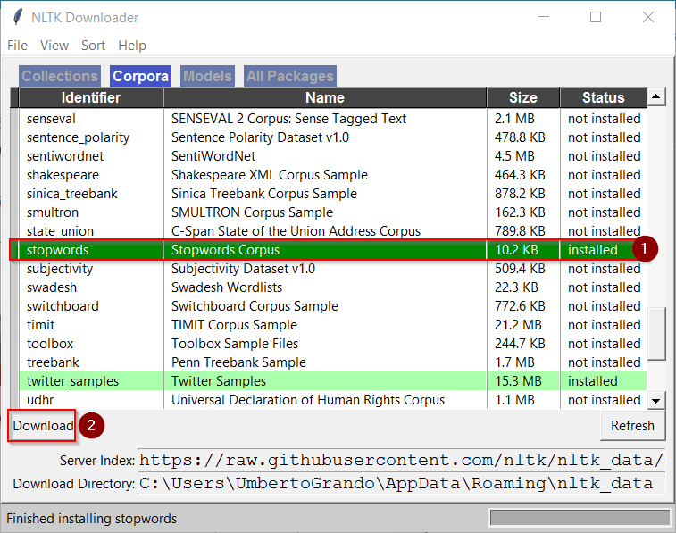

Python: Quick Stopwords with NLTK
TweetOne of the most tedious task in Text Analytics is cleaning raw text. Fortunately NLTK has a lot of tools to help you in this task. One of the most important is nltk.corpus.stopwords which contains stopwords for 11 languages.
Let's start coding:
import nltk nltk.download()First step is to install the stopwords so we run nltk.download().

Then we choose Corpora -> Stopwords -> Download

Back to coding!
from nltk.corpus import stopwords stop = stopwords.words('english') print(stop[0:5]) # ['i', 'me', 'my', 'myself', 'we'] print(type(stop)) # <class 'list'>The first line imports the corpus.reader, then we store into a variable the words contained in "English Stopwords". The words are returned as a list, so we can easily navigate them.
But how do we use them?
sentence = 'NLTK is a leading platform for building Python programs to work with human language data.' # With Generator keywords = [w for w in sentence.split() if w.lower() not in stop] print(keywords) # ['NLTK', 'leading', 'platform', 'building', 'Python', 'programs', 'work', 'human', 'language', 'data.']We use a simple sentence as input. Then we use a generator or a "for loop" to create a list of keywords, by ignoring all the words that are not in our stopwords list. We use word.lower() because all the words in the stopwords list are lowercase.# Without Generator keywords = [] for word in sentence.split(): if word.lower() not in stop: keywords.append(word) print(keywords) # ['NLTK', 'leading', 'platform', 'building', 'Python', 'programs', 'work', 'human', 'language', 'data.']
That's it, this is the fastest way to implement stopwords using NLTK. Have fun
Comments
Comments powered by Disqus